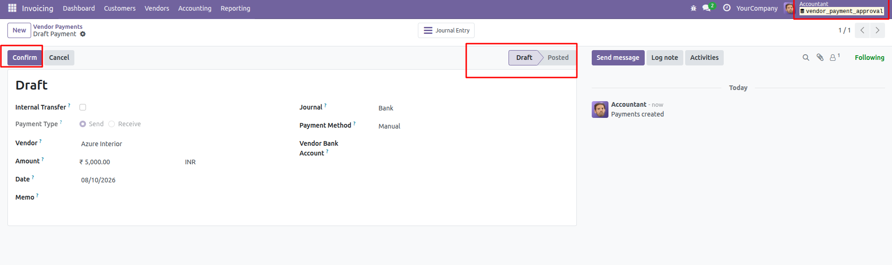
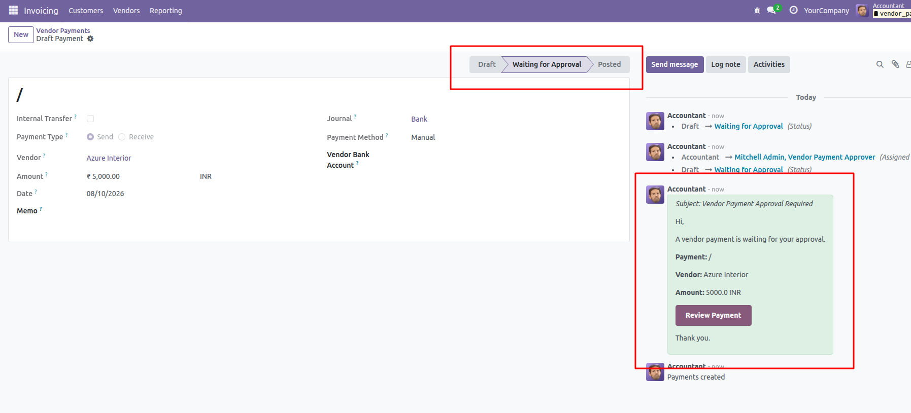
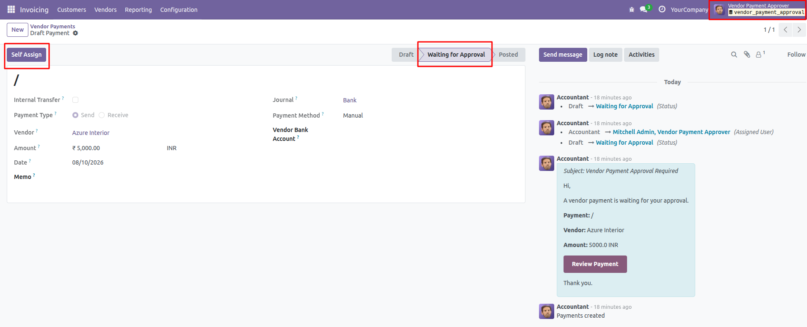
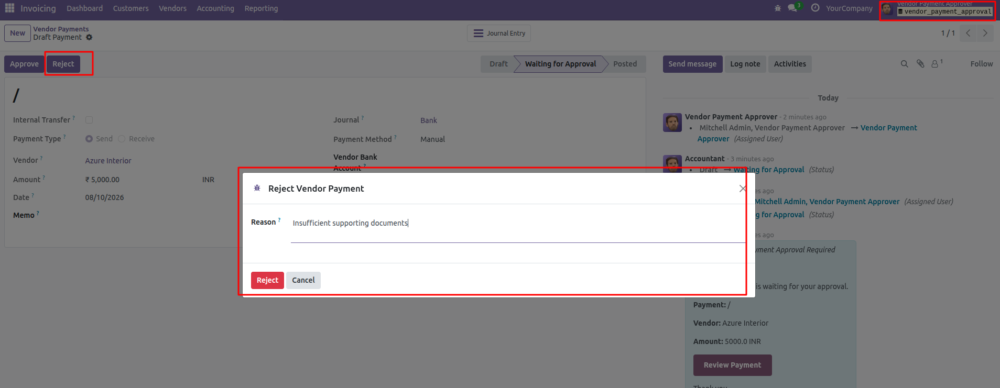
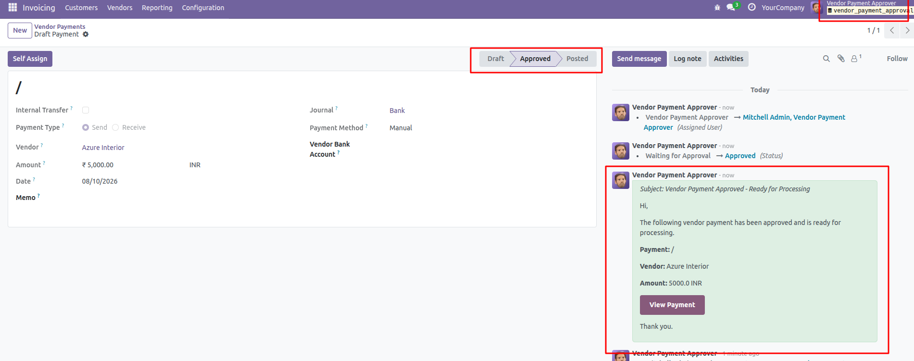
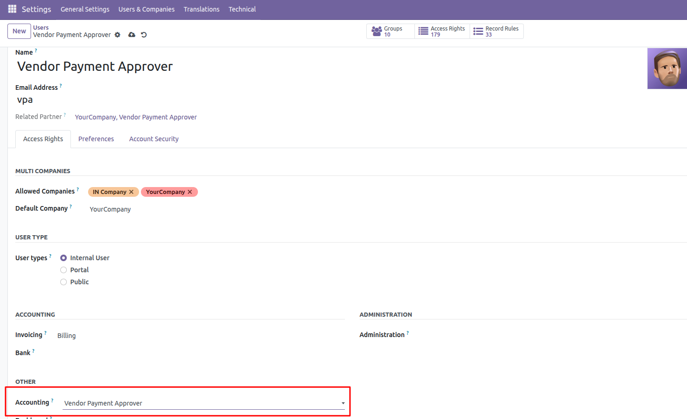

Vendor Payment Approval
Vendor Payment Approval adds an approval workflow
for vendor payments in Odoo Accounting. Vendor payments can be
submitted for approval before they are posted, helping businesses
improve payment control and reduce unauthorized payment processing.
Key Features
-
Vendor Payment Approval:
Submit vendor payments for approval before posting.
-
Dedicated Approver Group:
Control who can approve vendor payments using a dedicated
Vendor Payment Approver security group.
-
Self Assignment:
Authorized approvers can assign an approval request to
themselves before reviewing it.
-
Approve or Reject:
Approvers can approve or reject vendor payment requests
directly from the payment form.
-
Rejection Reason:
Capture a reason when a vendor payment is rejected.
-
Email Notifications:
Notify designated approvers when a vendor payment requires
approval.
-
Approval Notification:
Notify the accounting team when a vendor payment has been
approved and is ready for processing.
-
Chatter Tracking:
Track approval status changes and assignment activities
directly in the payment chatter.
-
Accounting Integration:
Works with Odoo Accounting vendor payments and the standard
payment registration workflow.
Vendor Payment Approval Workflow
The module introduces a controlled workflow for vendor payments.
A payment is submitted for approval instead of being immediately
posted.
Draft → Waiting for Approval → Approved → Posted
- Create a vendor payment.
- Click Confirm to submit the payment.
- The payment moves to Waiting for Approval.
- The configured approvers receive an approval notification.
- An authorized approver can use Self Assign.
- The approver reviews the payment.
- Approve or reject the payment.
- Approved payments are assigned to the accounting team.
- The accountant can process and post the approved payment.
Submit Vendor Payment for Approval
Vendor payments start in the Draft state. The
Confirm button submits the payment for approval
instead of allowing it to be posted directly.

Waiting for Approval
After submission, the payment moves to
Waiting for Approval.
Authorized Vendor Payment Approvers can review the payment and
take action.

Self Assign
Authorized approvers can use Self Assign to
assign the payment approval request to themselves before
reviewing it.

Approve or Reject Vendor Payments
Once the payment is assigned to an approver, the approver can
either approve or reject the payment.

If the payment is rejected, a rejection reason can be recorded
for future reference.
Approved Payment
After approval, the payment moves to the
Approved state and is ready for accounting
processing.

Email Notifications
The module sends an email notification when a vendor payment
requires approval. Approvers can use the provided payment link
to review the request.
After approval, the accounting team can also receive a
notification indicating that the payment is ready for processing.
Chatter Tracking
Approval actions are tracked in the Odoo chatter, including
status changes and user assignment. This provides a clear
history of the payment approval process.
Security
Vendor payment approval actions are controlled through a
dedicated security group:
Vendor Payment Approver
Only authorized users belonging to the configured approval group
can perform approval-related actions.

Complete Workflow
- Create a vendor payment.
- Confirm the payment.
- Payment moves to Waiting for Approval.
- Approvers receive an email notification.
- Approver self-assigns the payment if required.
- Approver reviews the payment.
- Approve or Reject the payment.
- Rejected payments store the rejection reason.
- Approved payments are ready for accounting processing.
- Accountant processes and posts the payment.
Installation
Install the module in your Odoo database and configure the
Vendor Payment Approver users.
After installation:
- Configure the Vendor Payment Approver security group.
- Assign the group to the required users.
- Create a vendor payment.
- Confirm the payment to start the approval workflow.
About AchaOdoo
AchaOdoo specializes in Odoo ERP development, customizations,
integrations, technical consulting, and training. We build
practical Odoo solutions and share technical knowledge through
modules, tutorials, blogs, and training.
Support
Need assistance or have questions about this module?